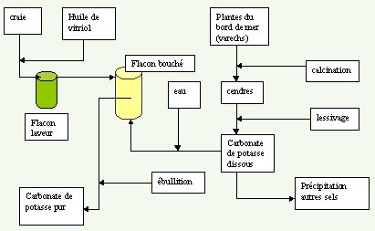
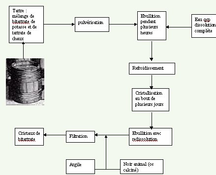
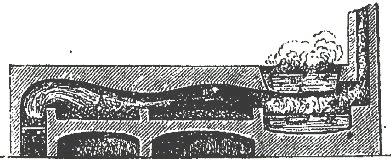
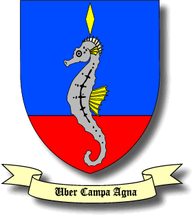
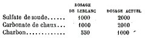
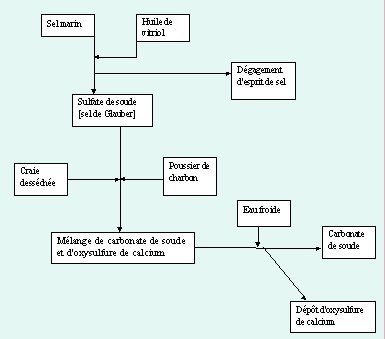
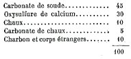
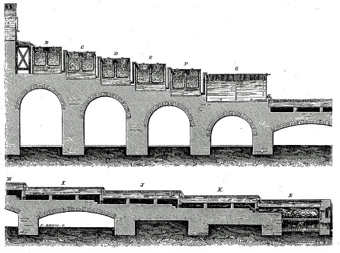
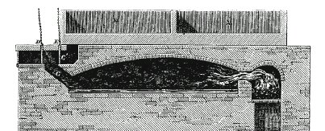

revu le 3 septembre 2004
Plan : I. Carbonate de potasse - II. Carbonate de soude
Lexique : fondant - sulfure de potassium - corindon - craie - huile de vitriol - varech - crème de tartre - flux noir - carbonate de soude - Egypte - Berthollet (Amédée) - efflorescence - Mystère des Cathédrales - natron - Roussel Raymond (1,2) - Lesseps (Ferdinand de) - sphinx - Leblanc (Nicolas) - Darcet (Jean) - sulfate de soude - oxysulfure - lessivage - gammes -
I. Le carbonate de potasse
1. historique : l'alkali fixe et l'alkali volatil
Voici un extrait du Cours de Chimie de Nicolas Lefevre qui permettra de voir en quoi les anciens chimistes pouvaient confondre les sels et être amenés à les nommer « hermaphrodites ».
Du sel alcali ou urineux, tant fixe que volatil.
Les sels alcalis sont nommés urineux, parce qu’ils ont la saveur de l’urine, il y en a de deux sortes, le volatil & le fixe. Le premier s’envole de lui-même en l’air, ou à une chaleur légère. Le fixe est celui qui soutient le feu sans s’envoler, comme sont tous les sels tirés des cendres. Par exemple, les sels de tartre, d’absinthe, de fumeterre, de petite centaurée, &c. Quelques-uns veulent expliquer le mot de volatil & de fixe, par la légèreté & la pesanteur ; mais nous aimons mieux nous attacher aux choses mêmes qu’à leurs qualités.
Les sels volatils abondent dans le règne animal, ils sont rares dans le végétal, & très rares dans le minéral. Toutes les parties des animaux mêmes les plus abjectes, comme la fiente, l’urine, le poil, la sueur, & les cornes fournissent grands quantité de sel volatil, & il reste si peu de sel fixe dans la tête morte, qu’un homme entier calciné n’en donnerait pas une dragme. Ce qui volatilité les sels dans les animaux, n’est autre chose que la digestion fermentative avec l’inspiration continuelle de l’air.
La famille animale n’est pas la seule qui possède des sels volatils, il s’en trouve dans la végétale, surtout des sels âcres, par exemple, dans les oignons, dans le cresson, le raifort & dans les autres plantes antiscorbutiques & anti-hypocondriaques. Quelques végétaux renferment des sels volatils tempérés par l’union d’une matière onctueuse, comme la menthe, la sauge, le romarin & tous les aromates. D’autres ont des sels volatils occultes comme les plantes vulnéraires, qui la plupart sont insipides, & dont le sel ne se manifeste que par ses effets, lors par exemple, qu’elles revivifient le mercure sublimé ou le mercure précipité. Car dès que le mercure qui a pris diverses formes par le moyen des sels acides, est mêlé avec le suc des herbes vulnéraires, il se fait une ébullition, pendant laquelle les acides quittent le mercure, & sont absorbés par les alcalis des plantes vulnéraires. Alors le mercure délivré reprend sa première forme & sa liberté.
Malgré cette expérience, il s’en trouve encore qui doutent, si les végétaux ont des sels volatils, & disent que s’ils en ont, ils ne sont ni purs ni simples. Il faut donc les convaincre par les sens : ne voyons nous pas qu’on tire des sels volatils urineux de la suie, selon Horstius ; & que si on met de l’absinthe desséché dans une retorte, ou dans le fourneau de Glauber, on en tire beaucoup d’esprit & de sel urineux très subtile, comme on tire des végétaux fermentés un esprit aussi inflammable que l’esprit de vin. On tire des mêmes végétaux putréfiés, un esprit urineux. On tire du pain par la distillation un esprit inflammable ; & si on sait gouverner le feu, on en tirera un sel volatil très excellent. Le tartre ne vient-il pas des végétaux ? On en tire cependant un sel volatil excellent, surtout si on se sert de la lie de vin. Les sels alcalis fixes sont tirés des cendres des végétaux, & ils se trouvent particulièrement dans la famille végétale. Il y en a peu ou point dans la famille animale, & encore moins dans la minérale, savoir le sel nitre fixe. Les sels fixes des Végétaux ; sont le sel de fumeterre, le sel d’absinthe, de rhue, &c. Mais ces sels fixes n’existent pas naturellement dans les végétaux comme les volatils urineux, ou comme les acides dans les minéraux, ils se font artificiellement par le feu qui fond & réunit l’acide, & l’urineux volatil de la plante. Voici de quelle manière cela se fait. Pendant que la plante brûle, & que les parties du mixte se dissolvent, le sel volatil de la plante s’accroche, en s’envolant, à une partie du soufre du même mixte, à quoi il se joint & se fixe en sel alcali. Le reste qui n’a point de soufre, pour s’accrocher, se dissipe en l’air, & constitue le corps de la suie ; & c’est la raison pourquoi les végétaux huileux donnent beaucoup de sels fixes. Voici par conséquent le moyen de tirer quantité de sels fixes ou de cendres gravelées des bois.
Prenez du bois de pin, & le brûlez dans un vaisseau ou un lieu bien fermé, le sel volatil s’attachera par ce moyen à beaucoup de soufre, & l’un & l’autre se fixeront en alcali artificiel très abondant, ce qui n’arrivera pas si on brûle le même bois au grand air ; car il fera moins de cendres, & par conséquent peu de sel fixe. Les bois pourris, quelque feu qu’on leur donne, ne fournissent aucun sel fixe, parce que tout leur sel volatil s’est dissipé avec leur soufre par la pourriture. Le sel nitre servira pour illustrer la génération des sels fixes des végétaux. Si on brûle le nitre seul, il s’envole en l’air, mais si on y ajoute un peu de soufre, il demeure un sel nitre parfait, & en d’autant plus grande quantité qu’on y aura mis plus de soufre.
Ces sels fixes sont nommés sels lixivieux, à cause qu’on les tire en forme de lessive les Arabes tes appellent Alkalis, du nom de Kali, herbe qui croit en Egypte, sur les bords du Nil, Fleuve rempli de nitre, elle est d’une saveur nitreuse, & les anciens Egyptiens la brûlaient pour en tirer du sel qu’ils appelaient Kali. On y a joint depuis la particule al, pour marquer son excellence & l’on a dit Alkali, pour Kali. On trouve quantité de cette herbe auprès des Salines de Trieste, & en Languedoc proche de la Mer. Elle ressemble à la pe-tite joubarbe. Le nom d’alcali ne se donnait au commencement qu’aux sels fixes des végétaux, mais comme on a remarqué que les sels volatils n’étaient pas moins contraires aux acides que les fixes, on a étendu ce nom à tous les urineux volatils & fixes, & on les a nommés alcali. Et nous nous servirons toujours dans la suite de ce mot alcali pour désigner le sel urineux, soit fixe, soit volatil.Lorsque l’acide & l’alcali combat-tent ensemble, ils composent un troisième sel, savoir le sel salé, qui n’est ni acide, ni urineux, mais composé de l’un & de l’autre, car la nature de ce sel est de participer aux deux natures. Zwelfer met souvent le sel salé pour le sel urineux, ce qu’il faut savoir pour ne se pas tromper en lisant cet excellent Auteur.
Les sels salés, suivant la nature des alcalis combinés avec les acides, sont sels salés fixes, ou sels salés volatils. Les premiers se font quand les acides s’accrochent à des alcalis volatils, & qui ne sauraient soutenir le feu, mais s’évaporent, tel est le sel ammoniac qui se forme, comme je dirai ci-après, du sel alcali de l’urine, & de l’acide du sel commun. Les sels salés fixes sont quand un alcali fixe se joint à un acide. Tel est l’esprit de vitriol, & le sel de tartre. Les sels salés sont, comme il a été dit, hermaphrodites, & ont deux natures, de manière pourtant que l’une domine sur l’autre car il faut que l’acide détruise l’alcali, ou que l’alcali détruite l’acide pour régner & faire un troisième sel salé, qui ne soit ni l’un ni l’autre, mais composé de tous les deux.
Il est à remarquer que quoique les acides & les urineux ne puissent se mêler ensemble sans faire effervescence, néanmoins les sels salés se joignent aux urineux & aux acides, sans aucun combat & sans aucune action.2. les alkalis au XIXe siècle.
Le carbonate de potasse (reportez-vous à la page de la Pierre et du Mercure) peut être utilisé comme fondant et aussi comme pourvoyeur de sulfure de potassium, utilisable par la voie sèche au creuset. Ce sulfure de potassium (à moins que l'on utilise du sulfate qui se transforme en sulfure) provoque la transformation du sulfate d'alumine en oxyde d'alumine qui cristallise et forme du corindon. L'ajout d'un oxyde de métal permet alors la coloration, ce qui mène - en théorie - aux gemmes orientales à base d'aluminates. Il y a plusieurs procédés d'obtention du carbonate de potasse. Celui que nous avons primitivement donné (1) nécessite l'emploi conjoint de salpêtre (nitre ou sulfate de potasse). Or, le carbonate de potasse peut entrer comme produit intervenant dans la synthèse du salpêtre (1, 2, 3, 4, 5, 6, 7, 8, 9, 10, 11, 12, 13, 14). Voici donc, ci-dessous un procédé d'obtention du carbonate de potasse indépendant du nitre.

FIGURE IComme on le voit, l'obtention de carbonate de potasse nécessite 3 substances de base : la craie (1, 2, 3), l'huile de vitriol (l'acide sulfurique concentré) et des cendres provenant des varechs. Le varech - faut-il le rappeler - forme un ensemble d'algues brunes rouges et vertes, rejetées en cordons le long des plages par les vagues ; il constitue actuellement un excellent engrais potassique ; des moucherons d'espèce spéciale se nourissent de sa masse. Son étymologie renvoie à wrac en anglais et à « débris, chose rejetée ». En latin, le varech se dit alga (= chose de peu de valeur au sens figuré). Le varech doit être tout d'abord calciné et les cendres lessivées. On obtient alors un carbonate dissous et impur. On lave les cristaux obtenus. Il faut ensuite transformer le carbonate en bicarbonate pour le séparer des sulfates et chlorures. Pour cela, on attaque de la craie par de l'huile de vitriol (acide sulfurique) ; du gaz carbonique se dégage et on le fait barboter dans le flacon contenant le carbonate de potasse. Celui-ci est alors transformé en bicarbonate. Il suffit de la faire bouillir assez longtemps pour obtenir le carbonate de potasse pur. Revoyez la page du Mercure. Vous observerez que le carbonate de potasse combiné à la chaux fournit la potasse caustique.
On obtient aussi le carbonate de potasse en décomposant par la chaleur, dans un creuset de fer, du bitartrate de potassium purifié, appelé crème de tartre. La figure suivante montre comment l'on procède pour avoir des cristaux de crème de tartre et je vous renvoie à la page sur le Mercure philosophique pour des détails et des références plus complets :

FIGURE IIIl reste ensuite un mélange de carbonate de potasse et de charbon qui est aussi connu sous le nom de flux noir. On reprend ensuite par l'eau qui dissout le carbonate de potasse et laisse le charbon et l'on évapore la liqueur à sec. Le carbonate de potasse obtenu est presque pur. Il sert dans la fabrication de la potasse.
Un autre moyen d'avoir du carbonate de potasse (c'est celui-là que nous avons indiqué sur notre 1er schéma de la Pierre philosophale) consiste à projeter par petites portions, dans une chaudière de fonte chauffée au rouge, un mélange de 1 partie de bitartrate de potasse (crème de tartre) et 2 parties de salpêtre. Le charbon de l'acide tartrique est brûlé complètement par l'oxygène de l'acide nitrique et il reste une matière blanche que l'on appelle flux blanc et qui est presque entièrement formée de carbonate de potasse. Ce carbonate est très soluble dans l'eau et sa dissolution possède une réaction fortement alcaline.
Ce sel est aussi connu sous le nom de soude ou de sel de soude. On l'emploie dans l'industrie du verre [cf. Loysel et Peligot] et pour le blanchiment. On l'a d'abord retiré des cendres des fucus et du varech, qui fournissaient avant la soude d'Alicante. On le fabrique actuelleemnt avec le chlorure de sodium et cette fabrication se fait en 3 étapes :
- transformation du chlorure de sodium en sulfate de sodium par l'acide sulfurique ;
- transformation du sulfate de sodium en carbonate par calcination avec un mélange de craie et de charbon ;
- lessivage de la masse calcinée et évaporation de la lessive.
En pratique, un mélange de 1000 parties de sulfate de sodium, de 1040 parties de craie et de 580 g de charbon est introduit d'abord dans le compartiment B du four où il se sèche. On le fait passer ensuite

FIGURE IIIdans le compartiment A, où la température est très élevée. Le sulfate de sodium est réduit par le charbon en sulfure. Ce dernier réagit sur la craie et il se forme du carbonate de sodium et du sulfure de calcium ; on note une réaction parasite qui donne une certaine quantité d'oxyde de sodium par l'action du charbon sur le carbonate. Lorsque la massse incandescente est devenue pâteuse, on la retire du four ; on la réduit en poudre et on la soumet à un lessivage méthodique. L'eau dissout le carbonate de sodium et laisse à l'état insoluble le sulfure de calcium qui reste mélangé avec la chaux provenant de la décomposition de l'excès de craie. On concentre les lessives dans les chaudières D, chauffées par la chaleur perdue des fours à soude. Finalement, on les laisse écouler dans le compartiment C de ce four où elles se dessèchent. On obtient ainsi le sel de soude du commerce. Lorsqu'on abandonne au refroidissement les lessives convenablement concentrées, elles laissent déposer ce qu'on nomme les cristaux de soude.
Nous rappellons qu'à l'état solide, on emploie le carbonate de potasse mélangé avec le carbonate de soude - ce mélange est plus fusible que chacun de ce sels pris séparémen t- pour désagréger par la fusion les combinaisons insolubles dans l'eau et dans les acides, telles que les sulfates terreux et les silicates, ce qui nous intéresse au premier chef (voir le Mercure philosophique).
¯
On l'a vu dans la section consacrée aux Anciens, le carbonate de soude était autrefois connu sous le nom de natron. Il s'agit d'un carbonate de soude que l'on trouve tout formé dans la nature et notamment, en Egypte, en Hongrie, en Italie [dans les provinces napolitaines], au Tibet, etc. Voici ce qu'en dit Louis Figuier dans ses Merveilles de l'Industrie :
Arrêtons-nous ici un moment ; il est clair que ce trouve ici développé un processus qui rappelle très fortement ce qu'écrit Artephius par exemple dans son Livre Secret, dont Fulcanelli a été assez charitable pour nous dire que seul cet auteur [en fait, le texte est apocryphe] et Pontanus avaient parlé « ouvertement » du dissolvant universel. Ces effets de masse renvoient aussi au poids de nature dont parle aussi Fulcanelli. Cela aussi, pourrait expliquer, en frontispice du Mystère des Cathédrales, cette association hétéroclite d'objets et de monuments divers dont... le
sphinx d'Egypte. Remarquons aussi qu'Eugène Canseliet, dans ses Deux Logis alchimiques, nous dit ceci :
"Il est vrai que tous deux [Raymond Roussel et André Breton] étaient du même contingent de 1877, et que « Monsieur Roussel », passionné du moteur à explosion, avait beaucoup d'estime pour le dessinateur de Fulcanelli et Bertand de Lesseps. Il y avait aussi qu'avec le fils aîné de Ferdinand, Champagne restait l'inventeur du traîneau à hélice..."
Ce sphinx blanc, en arrière-plan, et cette référence indirecte à Ferdinand de Lesseps, qui contribua pour partie au percement du canal de Suez, en Egypte sont des indices de plusieurs pistes sur l'Egypte et l'aspect insolite de la couleur de ce sphinx fait évoquer le sel blanc et pur dont nous parlons plus loin. Cela pourrait expliquer, aussi, que Serge Hutin, dans son excellent L'Alchimie (Que-sais-je ?) ait pu soulever l'hypothèse selon laquelle, derrirère Fulcanelli, se dissimulerait Pierre de Lesseps...parce que le blason qui clôt l'ouvrage est le même que celui de la famille De Lesseps :

Mais là encore, il n'est pas interdit d'imaginer aussi une référence indirecte à l'Egypte et au désert de Thaïat, ou de Saint-Macaire, à l'ouest du Delta, où l'on rencontre le natron. Dans le même ordre d'idée, nous pensons à cette remarque -en préface aux Mystères, p. 13- d'E. Canseliet :
"Je sais...parce que l'Auteur m'en donna l'assurance...que la clef de l'arcane majeur est donnée, sans aucune fiction, par l'une des figures qui ornent le présent ouvrage. Et cette clef constitue tout uniment en une couleur..."
Il se pourrait bien que cette clef soit donnée par l'image qui sert de frontispice à l'ouvrage, par ce sphinx au second plan, parfaitement blanc... Poursuivons à présent avec les procédés de fabrication de la soude artificielle : le lecteur comprendra vite le rapport avec le dissolvant universel[d'une part, certaines substances décrites ci-après ont été utilisées et nommées en tant que telles, au moins pour certaines d'entre elles par les alchimistes ; d'autre part, le type de recherche engagée est de celles que dû aussi mener Bernard Le Trévisan et nombre d'étudiants en alchimie] :

Reprenons les expériences de Nicolas Leblanc : il avait donc commencé par préparer lesulfate de soude en décomposant le sel marin par l'acide sulfurique, dans une chaudière de plomb de 25 cm de profondeur, 2,33 m de longueur et 1,6 m de largeur, qui était chauffée par un four disposé par-dessous. L'acide chlorhydrique résultant de la réaction était entraîné avec les gaz provenant de la combustion du charbon, dans une haute cheminée, qui le disséminait dans l'atmosphère. Leblanc faisait parfois absorber l'acide chlorhydrique par des vapeurs ammoniacales provenant de matières animales qu'il distillait dans des cylindres de fonte. Il obtenait ainsi du sel ammoniac qui trouvait son emploi dans l'industrie. Cependant, on ne pouvait achever la décomposition du sel par l'acide sulfurique dans la chaudière de plomb. Lorsque le mélange était devenu pâteux, on le retirait au dehors, sur des dalles en pierre siliceuse. Dans cette manipulation, il se dégageait des torrents de gaz et de vapeurs acides, qui étaient dangereux pour les ouvriers et insalubres pour le voisinage. Après le refroidissement, on la concassait à coups de merlin, et on introduisait les fragments dans un nouveau four à réverbère, construit entièrement en briques, et dans lequel la décomposition s'achevait à une plus haute température, et donnait uniquement du sulfate de soude. Pour transformer ensuite ce sulfate de soude en carbonate, Leblanc eut l'idée géniale d'ajouter de la craie [carbonate de chaux] au mélange de sulfate de soude et de charbon puis de calciner le tout dans un four. Leblanc eut aussi à déterminer les doses utiles pour optimiser la réaction. Voici les proportions indiquées par lui et celles qu'on suit actuellement [1873] :

Actuellement, on utilise « en grand » des fours elliptiques qui ont pour résultat de répartir dans tout le four une chaleur uniforme. Dans un four elliptique construit en briques, on introduit un mélange de sulfate de soude, une même quantité de craie desséchée, avec moitié moins de charbon de terre réduit en escarbilles et en poussier. On chauffe le four et lorsque les matière entrent en fusion, on mélange, à l'aide de râbles et e ratissoires, afin que les parties liquéfiées absorbent celles qui sont encore pulvérulentes. Au bout de peu de temps, toute la masse est devenue pâteuse et fond presque en entier. Il se dégage des bulles de gaz qui s'enflamment au contact de l'air en donnant l'apparence d'un feu d'artifice. Cette flamme provient de la combustion de l'oxyde de carbone qui s'est formé pendant la réaction. C'est le moment où il faut brasser avec le plus de force, pour consumer le gaz oxyde de carbone et hâter le dégazage. La pâte devient ensuite plus fluide. Il faut alors observer la consistance du produit ; si la croûte que la tige de fer rapporte a l'aspect d'un grain bien uni, on estime que l'opération tire à sa fin et l'on retire le carbonate de soude formé, car sinon, il reperdrait une partie du gaz acide carbonique emprunté à la craie. Il faut alors bien surveiller le feu car trop de chaleur ferait fritter la craie par l'alcali et trop peu de feu laisserait durcir la matière et rendrait impossible son retrait du four. Quand on la retire, la soude se présente sous forme d'une pâte molle, terreuse et embrasée. Le carbonate de soude ainsi formé se présente en masses fondues et compactes, d'un gris bleuâtre.
Il serait toutefois naïf de s'imaginer qu'il suffise de fondre un mélange de sulfate de soude et de carbonate de chaux car il y aurait alors double décomposition : il se formerait à la chaleur rouge du sulfate de chaux et du carbonate de soude. Mais, en reprenant par l'eau le produit de la réaction, la plus grande partie du carbonate de soude repasserait à l'état de sulfate de soude. L'eau détruirait ainsi ce qui se serait produit à la chaleur rouge. Cela tient à ce que le sulfate de chaux, qui est un peu soluble dans l'eau, décomposerait le carbonate de soude et formerait du carbonate de chaux qui est plus insoluble dans l'eau que le sulfate de chaux. Mais si -et c'est ce que fit Nicolas Leblanc- on ajoute du charbon au mélange de sulfate de soude et de carbonate de chaux, le sulfate de chaux résultant de la réaction des deux sels à la chaleur rouge, est transformé par le charbon en oxysulfure, avec dégagement d'acide carbonique et d'oxyde de carbone. Or, l'oxysulfure de calcium [2CaS,CaO] est insoluble dans l'eau. On peut donc, une fois la réaction faite dans le creuset, séparer de l'oxysulfure de calcium le carbonate de soude au moyen de l'eau froide qui dissout ce dernier sel, sans s'exposer à voir se produire la réaction inverse.

FIGURE V
(schéma de formation de la soude artificielle)Ainsi, une fois terminée la calcination du sulfate de soude, de la craie et du charbon dans le four, une fois extrait du four le produit salin, il faut traiter celui-ci par l'eau froide qui ne touche pas à l'oxysulfure de calcium et qui dissout le carbonate de soude ; il faut alors évaporer la dissolution de carbonate de soude, pour obtenir ce sel cristallisé admirable qui constitue la soude factice du commerce. En somme, il faut pratiquer un lessivage méthodique de la soude brute. Le carbonate de soude contenu dans le produit de calcination du mélange de sulfate de soude, de craie et de charbon, est fort impur : il se compose, outre l'oxysulfure calcique, de charbon et de l'excès de chaux et de sulfate de soude non décomposé. voici par exemple, la composition d'une soude brute, analysée dans une savonnerie de Marseille :

Il faut donc séparer ce mélange complexe. Pour cela, on traite par l'eau froide le produit que l'on retire des fours. On commence par réduire en poudre les blocs de soude brute, en les broyant dans un moulin à meules verticales en fonte, ou en les plaçant entre deux paires de cylindres cannelés. Ensuite, à l'aide d'un lessivage par l'eau, on extrait les parties solubles de cette matière. Le lessivage de la soude brute est une opération des plus importantes. Elle se pratique dans un étagement de douze à quinze bassins qui communiquent les uns avec les autres. Les bassins sont placés sur des gradins superposés et ces vases communiquent par des tuyaux qui fonctionnent -placés à 15 cm du fond des vases- comme des siphons. La figure ci-dessous représente l'appareil employé par de nombreux fabricants, tant en France, qu'en Angleterre ou en Allemagne pour le lessivage de la soude brute.

FIGURE VILe lessivage se passe ainsi : deux paniers contenant des blocs concassés de soude brute sont placés sous le dernier bassin, F, pendant 30 minutes. Ces paniers sont en tôle percée comme une écumoire afin que l'eau puisse y pénétrer facilement et se saturer de sels solubles que renferme la soude brute. Ce temps écoulé, on porte les deux paniers dans le bassin supérieur, E, et deux nouveaux paniers de soude vont les remplacer sous le dernier bassin. De demi-heure en demi-heure, on renouvelle la même opération, c'est-à-dire que les paniers qui ont séjourné sous le n°1 et le n°2 sont placés successivement sous les n°2 et n°3, et ainsi de suite, de telle manière qu'au moment où les paniers qui étaient d'abord sous le n°1 (le bassin inférieur), sont parvenus au n°5, le dernier ou le supérieur, tous les bassins ont reçu une charge de soude. Ainsi, les cinq ou six bassins sont employés à la fin simultanément par des paniers remplis de soude. A chaque déplacement on a soin d'ouvrir le robinet d'un réservoir d'eau, A, placé au sommet de cette espèce de cascade et de faire couler de l'eau pure dans le bassin supérieur, qui, par le tuyau du bas, déverse son trop-plein d'eau sous le vase qui le suit. Il s'établit donc un double mouvement que nous pourrions comparer à des gammes ascendantes et descendantes : à mesure que la soude renfermée dans les paniers remonte les étages des bassins et s'épuise, l'eau qui est entrée pure dans le vase supérieur, se charge de plus en plus en descendant. Arrivée dans le dernier bassin F, elle passe dans un réservoir de repos, G, où on la laisse séjourner et déposer les substances qu'elle peut encore tenir en suspension ; puis, au moyen d'un robinet, on l'introduit dans une première chaudière H, et on la soumet à l'évaporation. Dans le plus haut des bassins, on retire, à mesure qu'ils y arrivent, les blocs de soude brute totalement épuisée. Il s'agit donc à présent d'évaporer ces liquides chargés de carbonate de soude. La figure ci-dessous montre l'installation des chaudières évaporatoires au-dessous de l'appareil de lessivage. La concentration commence dans la chaudière la plus haute et se continue dans les suivantes. Le liquide, en se concentrant, laisse déposer du carbonate de soude, qu'on enlève avec une écumoire à mesure qu'il se forme. L'évaporation complète de la liqueur et la dessication du carbonate de soude s'opèrent dans une chaudière chauffée par un four particulier, qui donne plus de chaleur.

FIGURE VIIL'opération se fait ainsi : le four à dessication est surmonté de deux bassins M et N, qui sont chauffés par le même feu. Chacun de ces bassins a 80 cm de profondeur : le premier bassin, M, reçoit des lessives très concentrées marquant à peu près 25° à l'aréomètre de Baumé. Le second bassin N ne reçoit que des lessives faibles, impures, et qui ne laisseront qu'un sel coloré qui aura besoin d'être soumis à une purification. L'évaporation des deux liqueurs se fait en même temps. On place dans le bassin le moins chauffé, M, les lessives faibles. Les lessives arrivent, aspirées par un siphon, du réservoir dans lequel on les tenait en repos. Quand le liquide a subi une première concentration dans le bassin M, on le fait passer dans dans le second bassin. Quand la liqueur saline tombe sur la sole du four N, la chaleur considérable de cette surface détermine la prompte évaporation du liquide, qui se trouve réduit à l'état d'une bouillie épaisse. Une couche noirâtre couvre bientôt la surface du sel ; elle provient de la matière organique qui était contenue dans les liqueurs et qui se charbonne par la chaleur. Il faut alors, avec un long râteau de fer, agiter et brasser fortement la matière pour renouveler les surfaces et mettre en contact avec l'air toute la masse saline. La chaleur et l'air détruisent, en la brûlant, la matière organique, et le carbonate de soude prend une belle couleur blanche, indice de sa pureté. Alors, on substitue au râteau de fer, ou ringard, une simple tringle de fer avec laquelle il rassemble tout le sel en un même tas et le retire du four. L'opération se termine en écrasant le sel en petits fragments, ce qui lui donne l'aspect de granules.